What orogenic gold is
deposits are structurally controlled gold deposits formed during regional-scale metamorphism and the deformation that goes with it, during orogenesis: mountain building, in compressional to transpressional regimes. Böhlke used the term first in a 1982 USGS report on metamorphic-hosted gold-quartz veins, but it took off when David Groves at UWA used it from 1993, in his “crustal continuum” model for the Yilgarn’s lode gold deposits. slides 3 and 4 lecture recording, 13 Oct
Notice the older names packed into that history: metamorphic-hosted (the host rocks are metamorphosed), crustal continuum (they form at every level of the crust) and lode gold (the gold is in veins, or lodes). Historically about 75% of all gold ever mined has come from orogenic deposits, if you count the Witwatersrand with them as some do, and today they supply about a third of world production. slides 4 and 5 lecture recording, 13 Oct
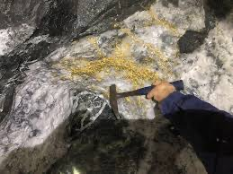
Everything yellow here is gold. What is it sitting in, and how would an orogenic gold geologist describe this ore?
Show what I see
- Milky white quartz with dark, sheared wall rock on either side.
- A dense swarm of free, visible gold grains in the quartz.
So this is the classic orogenic ore: free gold in a quartz vein along a structure, here at St Ives, Western Australia. Extremely rich, and very unusual: most orogenic ore is low grade, with gold invisible in the vein and the altered wall rock. slide 1 lecture recording, 13 Oct
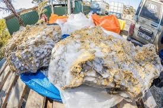
The recipe
Orogenic gold is “structurally controlled vein systems or lodes” (Groves et al., 1998), now widened to include the disseminated gold in the alteration envelope that old prospectors ignored. It forms at continental margins under compression to transpression, mostly in metamorphic rocks (greenstones, granites, metasediments) on the seaward side of the arc, at 200 to 700 °C and 2 to 20 km, from dilute fluids rich in CO₂ ± CH₄ and N₂. Quartz veins come with carbonate, sericite and reduced minerals such as arsenopyrite. Ages range from Archean through Proterozoic and Palaeozoic to Mesozoic. slide 11
Four points to hold on to. Most gold arrives during the retrograde change from amphibolite to greenschist facies, as the rocks cool. The type of fault doesn’t matter, so long as a structure was active when the fluid came through. Despite the name, most mineralisation comes up to 100 million years after the main mountain building, late in the orogenic cycle. And high fluid pressure is critical: it drives fluid up through the crust and triggers the earthquakes of the fault-valve pump in Lecture 12. slide 14 lecture recording, 13 Oct
Alteration is quartz, sericite, iron carbonates (ankerite, siderite), arsenopyrite and pyrite, and sometimes a green chromium mica, . Find fuchsite in an altered zone and gold is a good bet; vanadium micas show up in the Kalgoorlie fields too. Deposits are zoned vertically, Au-Sb higher in the crust and Au-As deeper. Because they sit in big, deep, steep faults and shears they have a great vertical extent but small lateral extent: long, vertical, planar orebodies, which is why some Kalgoorlie mines go below 2 km. Hosts vary from slate and schist to amphibolite, dolerite, banded iron formation and granite, and orogenic gold can overprint earlier ores such as Ni-Cu, VMS or SEDEX. slides 14 and 15 lecture recording, 13 Oct
- The lab’s mesothermal gold suites include Kalgoorlie and Lancefield (Western Australia). Expect quartz-carbonate veins with pyrite and arsenopyrite in sericite-carbonate altered rock.
- Bright green fuchsite (chrome mica) in carbonate-altered rock is a strong hint of an orogenic gold system.
- Gold may be free in quartz or locked in pyrite and arsenopyrite; Kalgoorlie ores carry gold tellurides.
- Structurally controlled lodes; compression to transpression; 200 to 700 °C, 2 to 20 km; dilute H₂O-CO₂ ± CH₄, N₂ fluid.
- Gold late: retrograde amphibolite to greenschist, up to 100 Myr after orogeny.
- Alteration: quartz, sericite, ankerite or siderite, arsenopyrite, pyrite, ± fuchsite.
- Au-Sb shallow, Au-As deep; great vertical, small lateral extent.
Where and when
The great historic orogenic goldfields were California’s Mother Lode, central Victoria (Bendigo, Ballarat, Castlemaine) and Bathurst-Hill End-Sofala in NSW. Their deposits line up along structures: the Mother Lode follows the Sierra Nevada in one long belt. slide 5 lecture recording, 13 Oct
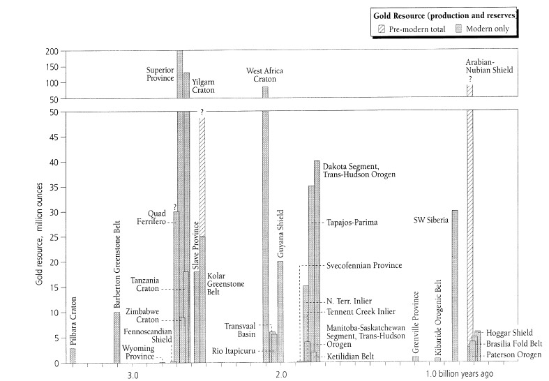
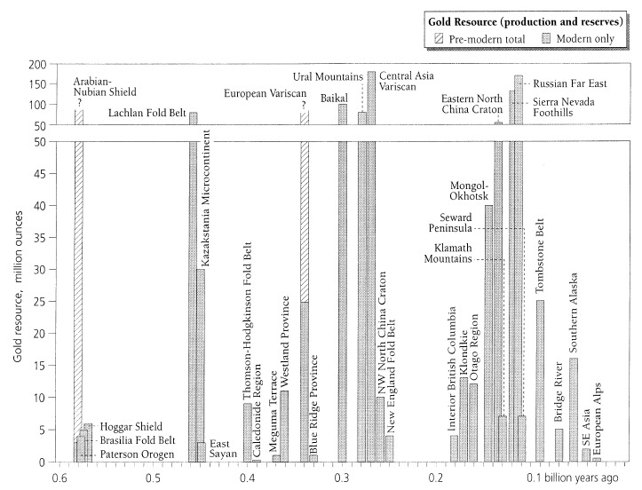
Through time, the big Precambrian provinces are the Superior Province of Canada, the Yilgarn Craton and the West African Craton; the Yilgarn alone has produced over 50 million ounces. In the Phanerozoic the giants are the Lachlan Fold Belt (mainly the Victorian goldfields), Central Asia (Uzbekistan, Kazakhstan), the East North China Craton, the Sierra Nevada and the Russian Far East. Smaller but still economic belts include the New England Fold Belt and Hodgkinson in Queensland. slides 12 and 13 (Goldfarb et al., 2001) slide notes
Hill End and Holtermann’s nugget
Central NSW’s orogenic goldfields cluster around Wattle Flat, Sofala, Hill End and Stuart Town, with Ophir, where payable gold was first found in NSW (the credit for that is still disputed). Hill End is still mined today, a small underground operation that has run for over a century; Sofala is a ghost town where you can still pan for gold. slide 7 lecture recording, 13 Oct
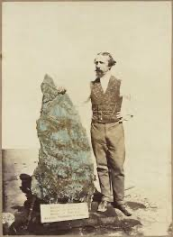
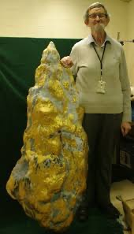
Holtermann’s “nugget” held 3000 oz of gold. Why do geologists insist it wasn’t really a nugget?
Show what I see
- A slab about as tall as a man, irregular and blocky, not rounded or water-worn.
So it’s not a nugget (a detrital lump from a placer) but a piece of quartz vein riddled with pure gold, found on 19 October 1872 at Hawkins Hill, Hill End. At 3000 oz (93.31 kg) it’s the largest single mass of gold ever recorded, and would be worth at least US$15 million today. Bernhardt Holtermann was a storekeeper; on the goldfields the storekeepers made the money, and his fortune paid for a photographic record of the NSW goldfields that still survives. slide 9 lecture recording, 13 Oct
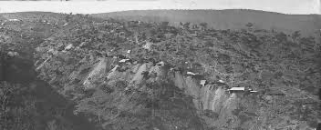
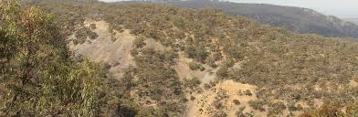
Some definitions you’ll need, because they get used loosely. A prospect is mineralised rock not yet proven economic. A deposit has been mined, or holds a proven economic resource not yet mined. Workings are excavations made only to find or extract ore. A mine is where ore was or is being extracted. A field is a group of deposits or mines with a similar geological setting. slide 8
Prospect, deposit, mine or field?0 / 4
The Yilgarn Craton
The Yilgarn is an Archean granite-greenstone terrain of three superterranes: from west to east the West Yilgarn, Southern Cross and the Eastern Goldfields. All are 3.0 to 2.6 Ga; most of the gold is in the Eastern Goldfields, in greenstones of 2.71 to 2.67 Ga. Gold is hosted by greenstones, granites, granitic gneiss and banded iron formation, in orogenic, intrusion-related and porphyry systems formed over a wide range of temperature and pressure. Boddington, in the west, is the big Au-Cu exception, so far a deposit without neighbours. slides 16 to 19 lecture recording, 13 Oct
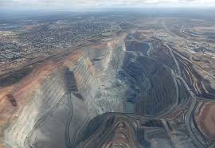
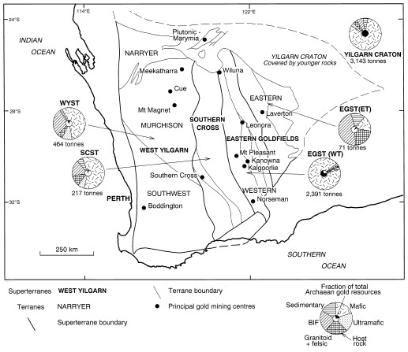
Two things make Yilgarn exploration hard. A very long weathering history has left deep regolith, in places weathered to 200 m, so you drill through it to reach fresh rock. And the gold isn’t on the big crustal faults themselves but on the subsidiary structures branching off them, often where structures intersect. Host rock matters less than structure and timing: at Kalgoorlie it’s mafic volcanics, elsewhere BIF or granite, as at Granny Smith. slides 16 to 19 lecture recording, 13 Oct
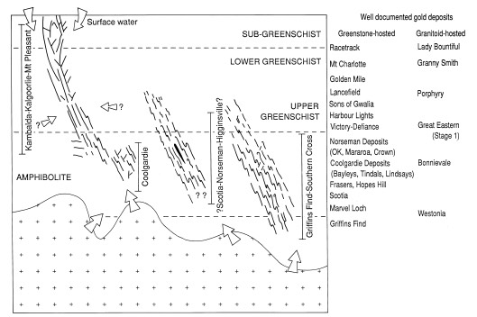
Which crustal level?0 / 4
The Victorian goldfields
Victoria’s gold sits in the Palaeozoic Lachlan Orogen, mostly in greenschist-facies turbidites: monotonous sandstone, siltstone and shale, with little visible alteration. The province divides into nine zones bounded by major faults (Moyston, Avoca, Heathcote, Wellington); the biggest deposits are in the Stawell to Ballarat zones. As in the Yilgarn, deposits sit on structures branching off the big faults. At Walhalla (Woods Point) the gold crystallised along the contacts of a dolerite dyke that had arrived earlier and acted as an aquitard, damming the rising fluid. slide 21 slide notes lecture recording, 13 Oct
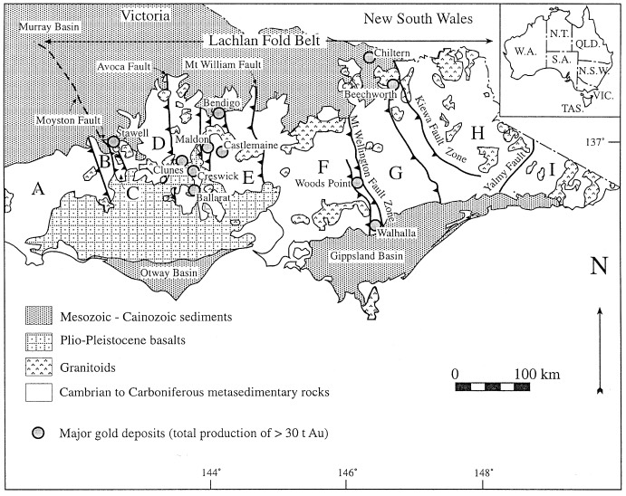
The numbers are staggering: Ballarat produced an estimated 200 000 kg (6.43 Moz; the slide values it at about US$33 billion today) and Bendigo about 700 000 kg (22.5 Moz; about US$120 billion on the slide, or about US$90 billion at US$4000 an ounce), much of it alluvial before the deep reefs. Gold ages run from late Ordovician to Devonian, different in each zone, because each zone was deformed at a different time. Today’s exploration focuses on the west, around Stawell, where the gold-bearing rocks continue under younger cover. slides 22 and 24 lecture recording, 13 Oct
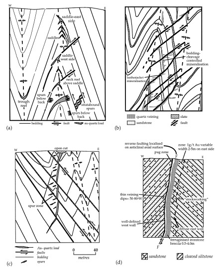
Where does Bendigo’s gold sit?tap a target
These are folded sandstone and shale beds cut by a reverse fault. Tap where you’d expect Bendigo-style saddle reefs.
Stawell: gold around a basalt dome
Stawell, at the western edge of the Victorian goldfields, dates from the 1850s. Its largest mine, Magdala (about 4 Moz), has produced gold from more than 1600 m below the surface. The gold sits around the margins of a large dome of Ordovician basalt. Basalt is rigid and barely deforms while the sediments around it fold and shear, so voids open where the contrast in rock strength is greatest, and quartz veins and gold fill them. The extension of the Stawell corridor south, under cover, is a prime target. slide 25 slide notes
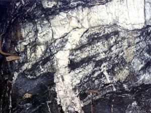
There are at least two sets of quartz here. Which came first, and which is likely to carry the gold?
Show what I see
- Many thin, irregular, deformed white quartz veins in black carbonaceous shale.
- A thicker quartz vein cutting straight through them.
So the thin, deformed veins are earlier and the thick vein that cuts them is later: crosscutting relationships. This is the mineralised vein of the Hanging Wall lode cutting earlier barren quartz. In orogenic gold the payable vein is usually a late one, so knowing which generation you’re looking at matters. slide 25 lecture recording, 13 Oct
Muruntau and the gold league table
Muruntau, in the desert of Uzbekistan, is the world’s largest open-cut gold mine (about 3.5 × 2.5 km and 560 m deep) and the largest orogenic gold deposit, with an estimated 150 million ounces in total. It is 100% government owned. Locals had mined turquoise there on a small scale for thousands of years; a soil geochemical survey picked up arsenic and gold anomalies in 1958, and mining began in 1967. The host is Ordovician to early Silurian marine clastics, siltstone and mudstone, much like Victoria’s; alteration is fine-grained and largely argillic. It produces over 2 million ounces a year. slides 26 and 27 lecture recording, 13 Oct
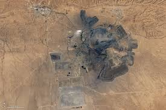
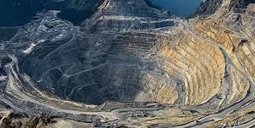
The gold league table
Log scale. Ounces from slides 9, 22, 26 and 28 (Witwatersrand 44 000 t); values recalculated here at US$4000 an ounce.
Check the Witwatersrand figures. Slide 28 says it supplied more than 60% of all gold ever mined and would be worth US$240 000 trillion; Lecture 12 (slide 44) gave about 40%. At 44 000 t, the value works out at about US$5.7 trillion at US$4000 an ounce (44 000 × 32 150.7 × 4000), so the slide’s figure looks like a slip. The share depends on what total you divide by, so quote it with its source.
Where the fluid and gold come from
For a long time orogenic gold fluid was taken to be metamorphic water, released as rocks heat and dehydrate (that’s how Lecture 12 framed it). This lecture puts the other side. Many experimental and isotope studies over the last 20 years point to granites as the source of the gold-transporting fluid: the sulphur isotopes look magmatic, and the trace elements that travel with the gold (Bi, Te, As, Mo, Sb, Sn, W) are classic granite elements. The granites themselves are usually buried, not exposed. slide 29 lecture recording, 13 Oct
The gold itself seems to come from the country rock. The current consensus is that it starts as micro-inclusions in pyrite in regionally extensive carbonaceous mudstones and shales, and is released during metamorphism and moved by convection. One study in northern Finland sampled every 50 m across 10 km either side of a deposit and found gold rising steadily toward it, a sign the gold was gathered from the surrounding rock. slide 29 lecture recording, 13 Oct
Faults and shear zones focus the fluid and then provide impermeable or reactive barriers that make gold precipitate; dolerite dykes and sills are favourite traps. Fluid moves by seismic pumping (Richard Sibson’s model, developed further by Stephen Cox), and a whole deposit may form in just 10 000 to 100 000 years. slide 30
Fluid source or gold source?0 / 4
Carlin-type gold
This lecture treats deposits as a subtype of orogenic gold. In Nevada the gold is in sub-greenschist argillites and limestones, with intense silicification and lesser kaolinisation, formed 2 to 3 km down at 200 to 300 °C from dilute fluid during Cenozoic back-arc extension (Basin and Range). The deposits line up along trends: Carlin, Getchell, Battle Mountain-Eureka, Independence and Alligator Ridge. Southern China has them too; none has been found in Australia. Mining them built two of the biggest gold companies, Barrick and Newmont. slides 31 and 32 lecture recording, 13 Oct
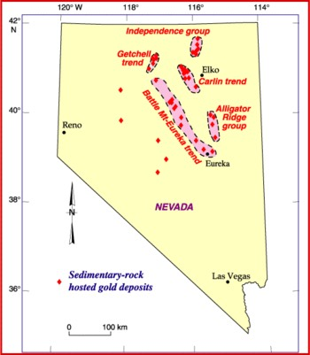
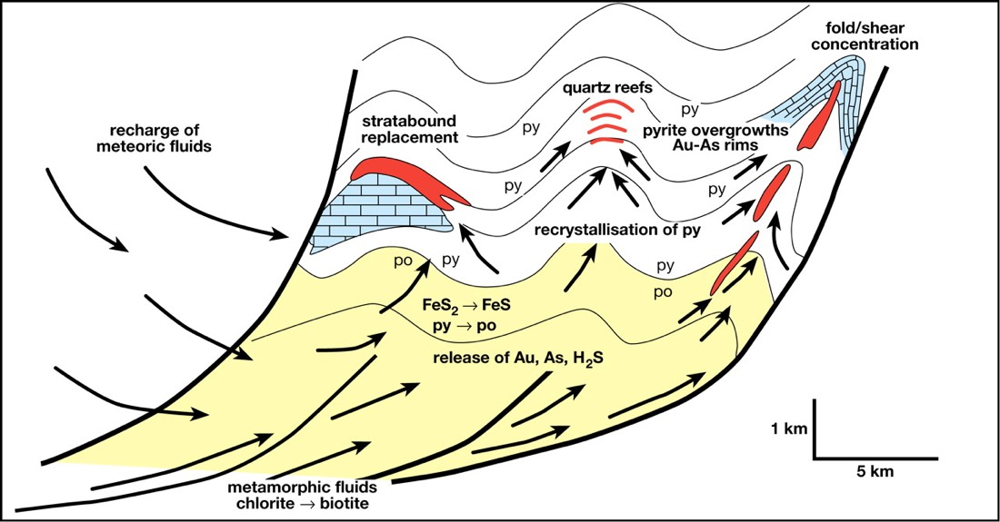
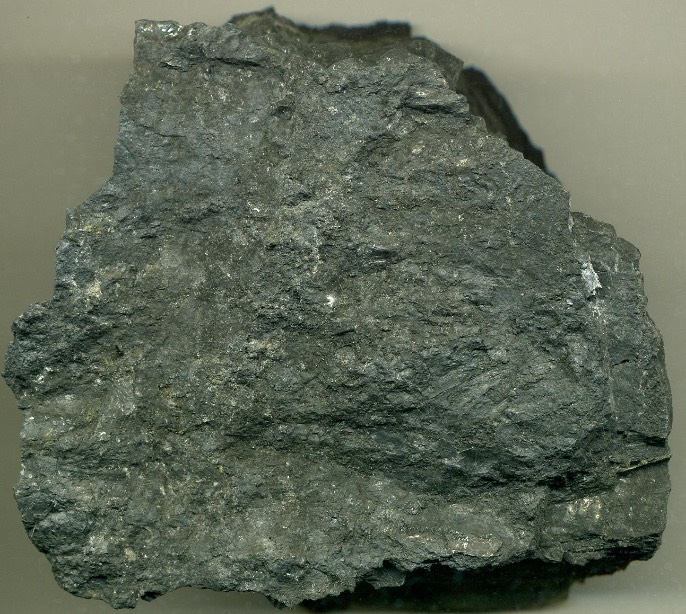
This is gold ore. Find the gold.
Show what I see
- A dark, fine-grained carbonaceous sedimentary rock with a little fine pyrite. No visible gold at all.
You can’t, and that’s the point. Carlin gold is so fine it’s essentially invisible, locked in arsenian pyrite. What you can see are the arsenic and antimony minerals that come with it. Because the ore looks like waste, Carlin mines have to assay constantly to know they’re still in ore. slides 31 and 33 lecture recording, 13 Oct
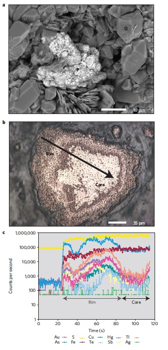
The laser traced across the zoned pyrite from rim to core. Where are gold and arsenic highest?
Show what I see
- A clean core and a speckled, inclusion-rich rim.
- On the trace, gold, arsenic and the other trace elements jump up as the beam enters the rim and are higher across the rim than in the core.
So the gold sits in the rim: thin, arsenic-rich ore-stage pyrite grown over earlier gold-poor pyrite, when the ore fluid cooled and mixed with heated meteoric water. slide 34 (Muntean et al., 2011) slide notes The recording describes the gold as being in the core; the figure and the slide notes put it in the rim, so the page follows the slide.
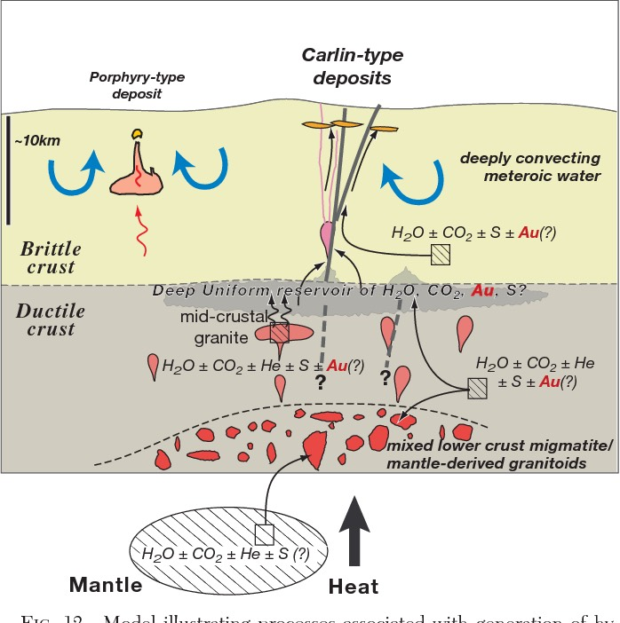
Tuena: reading vein generations
Tuena, between Bathurst and Goulburn in NSW, is a historic goldfield (about 100 000 oz) studied in an honours project in 2020. It sits along the Godolphin-Copperhannia fault corridor, with numerous small deposits along subsidiary faults. A mysterious adit, over 100 m long and on no geological record, gave a rare continuous 3D view through the geology, which was mapped and logged in detail. slides 36 to 38 lecture recording, 13 Oct
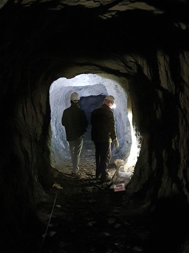
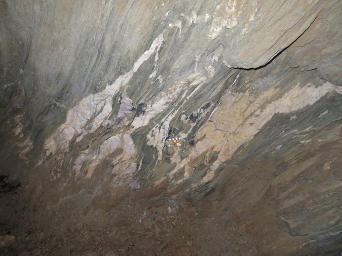
These pale quartz veins lie along the foliation and are folded. Were they there before or after the main deformation?
Show what I see
- Pale quartz in pods and lenses, folded and dragged into the foliation, some rootless.
So these veins were there before or during deformation: early, refolded veins and syn-kinematic veins. They’re not the gold veins. At Tuena, as across the Lachlan, the gold is in late, post-kinematic, planar, carbonate-rich veins that cut the foliation. slides 39 and 40 lecture recording, 13 Oct
Put Tuena’s history in order0 / 7
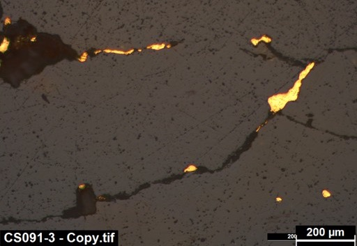
What are the bright yellow grains, and where are they sitting?
Show what I see
- Bright yellow, high-reflectance grains, irregular and elongate.
- Strung along thin fractures, plus a few isolated specks.
So it’s gold in micro-veinlets and disseminated grains, filling late fractures: the gold came in after the rock was already deformed and fractured, as the vein history says. slide 40
The lesson repeats from Hill End to Kalgoorlie: deposits vary, but they sit in the same structural corridors, and if you find one you should find more. lecture recording, 13 Oct
Self-test
Answer out loud or on paper before you open each one. Claim the ounces if you got it.
Glossary and flashcards
Terms this lecture assumes or defines quickly. The dotted words in the text open them in place.
Flashcards
Where this goes next
Lecture 14 moves to the shallow end of the gold world, epithermal gold-silver deposits, where boiling and mixing near the surface do the work that earthquakes and effervescence do here.